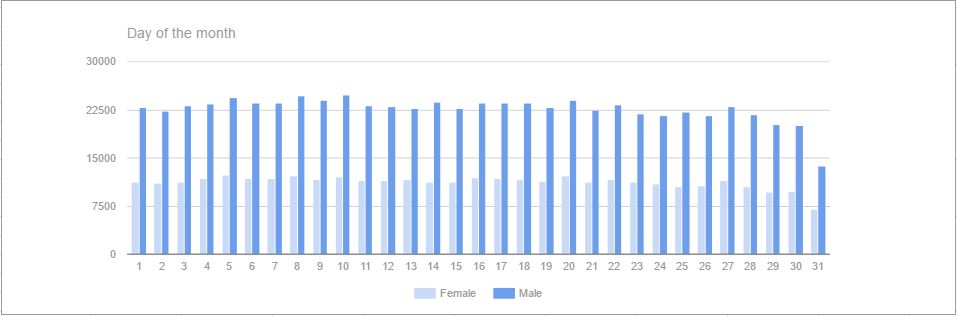
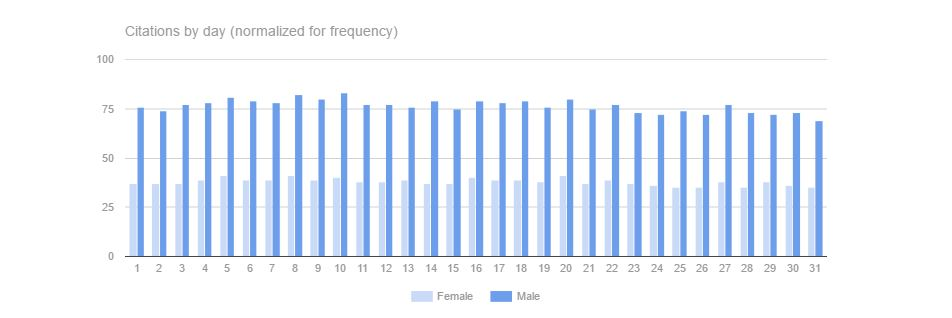
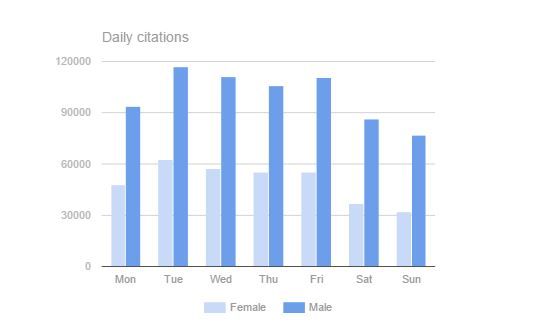
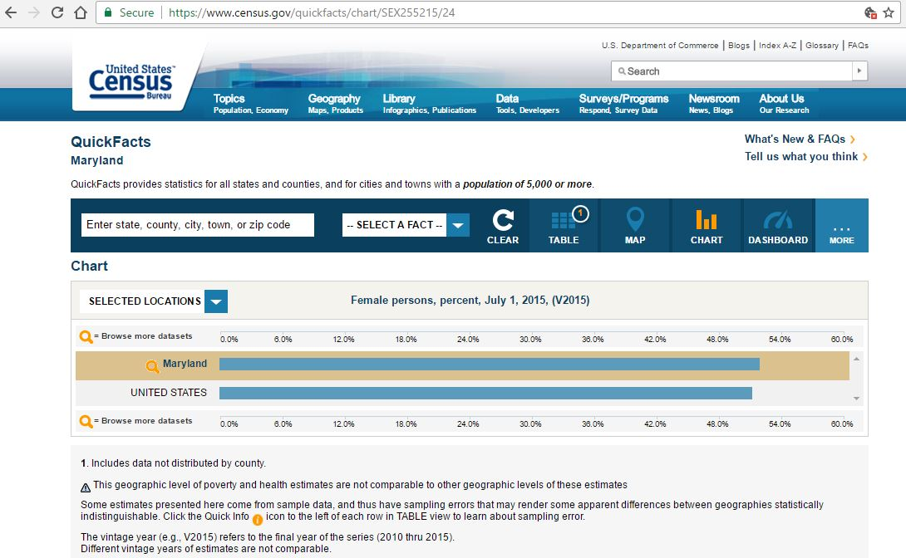
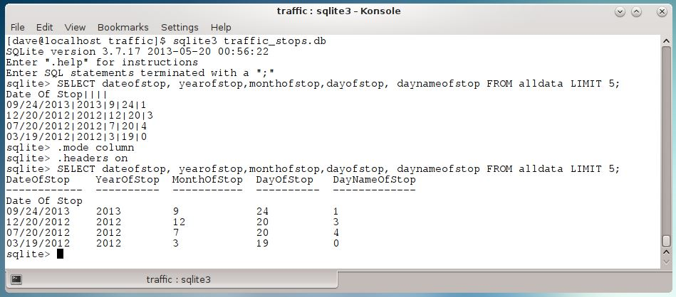

Data.gov has a catalog of over a 160,000 data sets that are available for anyone to work with. The state Maryland contributed a collection of traffic violation data. This data looked like it would be a useful tool to shed light on a commonly held belief, that more tickets are issued at the end of the month in order for officers to 'meet quota'. The MD Traffic Data did shed light on that question, but it also raised a few more.
Data.gov provides a little information about each dataset. In this case the CSV file reportedly "contains traffic violation information from all electronic traffic violations issued in the County".
After downloading and renaming the file the next step was to check it's contents and load it up into an SQLite database.
It is about 375MB in size has just under 1.1 million rows, so lots of data to work with! The linux head command revealed a header row and some variety in the data encoded in the file.
Running a few checks with grep highlighted some problems with the data. The file was uploaded in 2015, but the year field contained a thousands of entries with bad dates. There were missing dates, early dates and late dates. Rather than drop rows with improbable dates, where clauses were added to the SQL queries to restrict the results to dates that were at least plausible.

There were other problems with the raw data. This was a CSV file but commas were used within fields as well and as a field seperator. In some instances the sub-agency (usually a geographic designation) had a comma in its name. Other fields occasionally had internal commas. When present, the geographic coordinates were given as "(latitude, longitude)"

More troubling than the inconsitent use of internal commas, many rows were missing significant numbers of fields altogether. Rather than trying to guess what data was present in these cases, the rows with missing fields were just dropped. Here is the script that was used to set up the database, clean the incoming lines from the CSV file, and then insert the rows into the database. After cleaning up the file, all but 1818 rows (about .1%) were successfully imported into the database.

Since the values for the year field were known to be bad, the first step was to define a range of data. Since the file was last updated in 2015, any more recent dates had to be errors. The number of rows per year dropped off sharply before 1994, but were still significant until the early 1990's. The period from 1990 to 2015 was chosen as most likely to hold accurate values.
sqlite> SELECT year, count(year) FROM alldata GROUP BY year;
0 809
4 3
5 1
6 3
--- SNIP ---
1986 778
1987 1119
1988 1509
1989 1689
1990 3005
1991 3659
1992 5651
1993 6881
1994 12017
1995 16694
1996 18729
1997 25766
1998 30632
1999 39528
2000 51483
2001 51493
2002 59170
2003 64478
2004 66794
2005 67255
2006 68922
2007 68032
2008 59877
2009 44734
2010 53482
2011 54611
2012 57094
2013 51225
2014 39097
2015 29480
2016 14522
2017 2022
2018 4
2019 12
2020 4
--- SNIP ---
7247 1
7266 2
7513 1
7575 1
8008 2
8042 3
8615 1
8739 2
9035 2
9382 1
9510 1
9563 1
9867 1
9999 29
6788
01 - Motorcycle 1
INFINITI 1
Year 1
When the Maryland released the citation data, the date was in the form 'mm/dd/yyyy'. After adding additional columns for 'year', 'month', 'd ay', and 'day of the week' parsing the original date during import was an easy way to get a more granular view.

If there really are more citations handed out at the end of the month to 'meet quota' then there should be an uptick in reported citations. However, a first glance shows a serious drop at the end of the month.

What's going on? The reason is that while all months have 28 days in them, only some months have 29 or more. Here is another view adjusted to show the number of citations per month-day.

The second graph is more balanced, men hover around 76.5 citations per day over the 15 years from 1990 to 2015. Women average slightly mor than half that figure, 37.9 citations per day. But even with this weighted view, the number of citations drops off towards the end of the month. Which is the opposite of popular opinion. So perhaps there is a yearly quota?

Or a weekly one?

The numbers don't support either of those ideas. In all cases: day of the month; day of the week; and month, there are more citations toward the beginning of the period rather than towards the end. Given these figures it is hard to conclude that there is a quota in effect.
However, there are some difficulties with the data.
Even a cursory look at these numbers show men consistently getting twice as many citations as women over the entire 15 year period which is a strange result. The US Census website reports that Maryland has a slightly large proportion of females (51.5%) than males (48.5%).

Couples may debate just how surprising, but it is at least a little surprising that men would be cited twice as often as women. Perhaps there is some sort of selection going on that skews the data set. A few more queries indicate that this is, in fact, the case. All of the citations are related to incidents where there was an accident.

While it is certainly interesting that accident rates appear to be skewed towards the early part of the week, month and year if this data set only lists citations related to accidents, then it means that there is insufficient data to answer the original question. According to the day-month figures, the number of accidents per day is fairly constant. And so, accident related tickets should be too. Additional data on non-accident related tickets would be needed to see if non-accident citations are also issued on a consistent basis. That data is missing.
So the original question, are there ticket quotas, is unresolved. To it a few others can be added. Do men really have twice as many accidents as women or do they just get ticketed twice as much for them? Why are there spikes in the accident rate at the beginning of the week? Is there a significant number of accidents where tickets aren't issued? Is there a way to determine how many people and or vehicles were involved in a given accident? And perhaps the sharpest question for this audience -- how can researchers get access to the additional data needed to answer these questions?
The Maryland data set is rich and can provide many intersting avenues of research. Unfortunately it only contains a subset of all citations issued and so it is insufficient to answer the question about quotas. However, working with this dataset has been a useful exercise, and especially valuable in highlighting the need to check data integrity, clean incoming data and validating assumptions before drawing conclusions.
For those still looking for a few more details, the next sections discuss one or two points that didn't really fit in the story but that may be of some interest.
Here are a few additional items of interest that are worth noting but that didn't really fit into the flow of the story.
The default output style in sqlite3 works for some parsing, but it is not ideal for all purposes. When exploring data it may be helpful to change the output to columnar form and to add a header row.

SUM or COUNTCOUNT works well when field values are easily filtered.
On the other hand, if the values are encoded as 1 or 0 then using SUM can be better quick way to get an aggregate count over a field.
There are two benefits to using SUM like this. The SQL is more compact with SUM (there's no where clause) and rows are returned when the sum equals zero (COUNT doesn't return the output row).
Here's an example counting alcohol related citations issued to Male drivers.
sqlite> SELECT year, COUNT(Alcohol)
...> FROM alldata
...> WHERE (year > '1989') AND (year < '2001') AND gender = 'M' AND alcohol = 1
...> GROUP BY year;
Year COUNT(Alcohol)
---------- --------------
1992 31
1993 42
1994 44
1996 44
1997 48
1998 35
1999 43
2000 103
sqlite> SELECT year, SUM(Alcohol)
...> FROM alldata
...> WHERE (year > '1989') AND (year < '2001') AND gender = 'M'
...> GROUP BY year;
Year SUM(Alcohol)
---------- ------------
1990 0
1991 0
1992 31
1993 42
1994 44
1995 0
1996 44
1997 48
1998 35
1999 43
2000 103
sqlite>
Thanks for reading this far, I hope these notes prove useful!